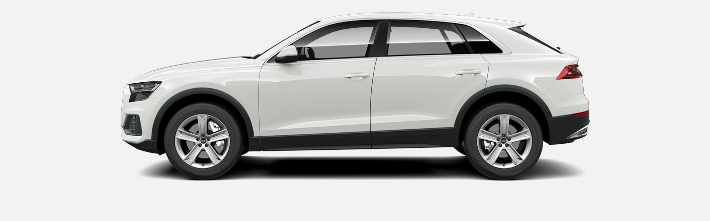

AUDI Q8
Audi Q8 — спортивный кроссовер от немецкого производителя автомобилей Audi.
Концепт Audi Q8 был представлен публике 9 января 2017 года на Североамериканском международном автосалоне (NAIAS) в Детройте, США. Премьера серийной версии состоялась в мае 2018 года на Шеньчженьском автосалоне в Китае. Спортивная версия RS Q8 будет показана позже на Женевском автосалоне. Тестирование спортивных версий Q8 - SQ8 и RS Q8 уже проходят.
Дизайн
Audi Q8 станет первой моделью внедорожника, разработанной новым руководителем Audi в области дизайна, Марком Лихте, и откроет новый язык дизайна для внедорожников Audi и для бренда в целом. Большая решетка радиатора с горизонтальными планками, и линии Q8 вдохновлены раллийным автомобилем Audi Sport Quattro с 1980-х годов.
Характеристики
- Двигатель: V6 2995 см3
- Коробка передач: Автомат
- Масса автомобиля: 2155 кг
- Максимальная скорость: 250 км/ч
- Разгон 0 — 100 км/ч: 5,9 с
Q8 Concept
В оснащении Audi Q8 Concept применены одни из самых новейших технологий. Практически все элементы управления используют сенсорные технологии в том числе открывание дверей концепта осуществляется с помощью сенсоров.
На автомобиль установлена гибридная силовая установка с бензиновым V6 TFSI объемом 3,0 л. который выдает 333 л.с. и электродвигателем E-tron совокупная мощность которых 448 л.с. Максимальная скорость ограничена на 250 км/ч. Разгон до 100 км/ч равен 5,4 секундам.
Модель оснащена адаптивной пневмоподвеской на пятирычажках спереди и сзади с изменением клиренса в пределах 90 мм, матричными фарами и проекционным дисплеем с системой дополненной реальности.

Примечания
- Кроссовер Audi Q8: подробности и новые изображения
-
Концепт Audi RS Q8 везет в Женеву 600 л.с
- Архивировано
- Проходят испытания Audi SQ8 и Q8 RS
- Audi Q8:Первый спортивный кроссовер-гибрид от Audi